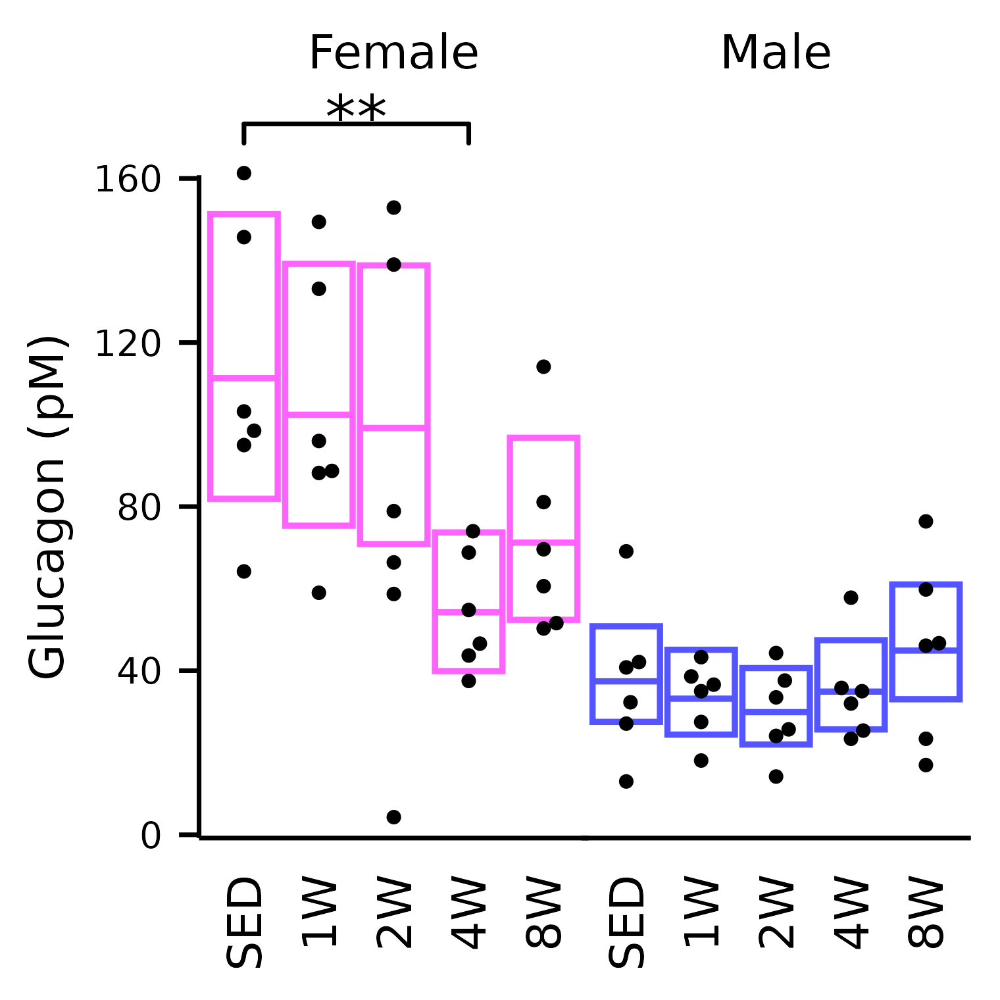
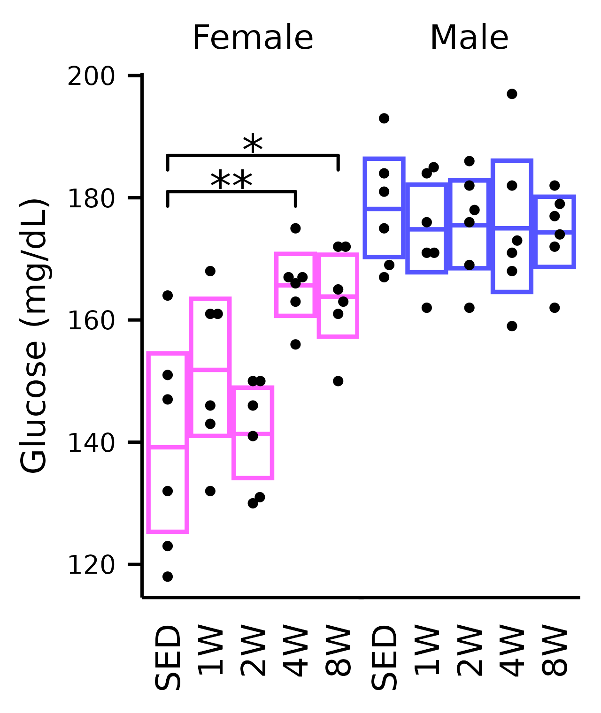
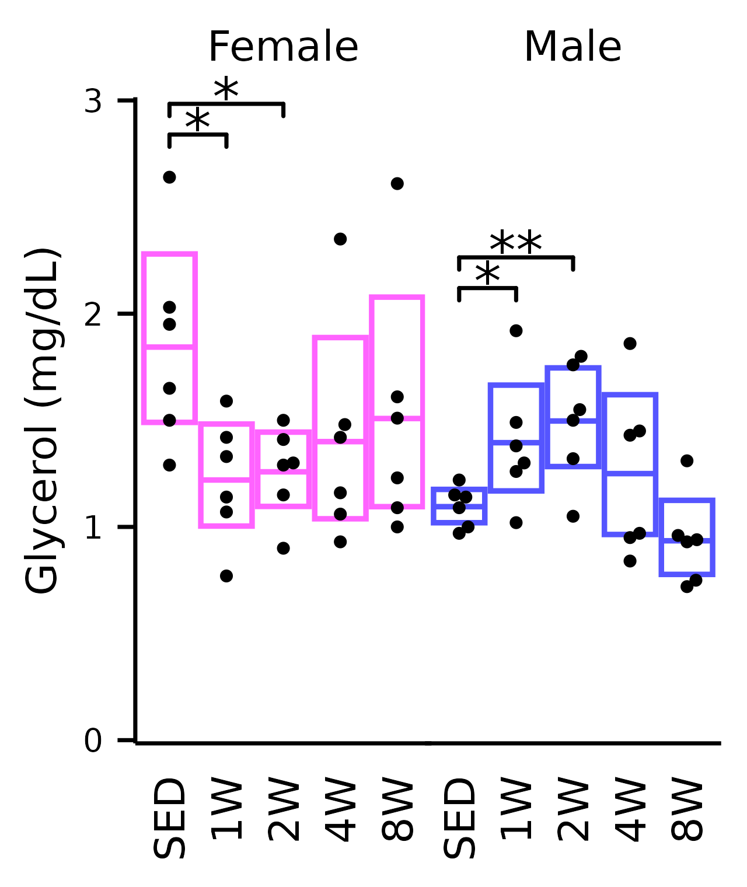
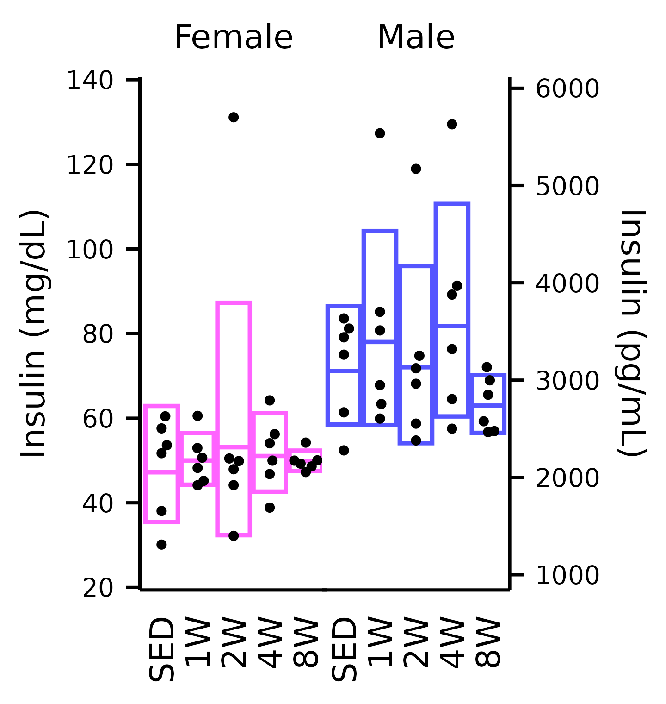
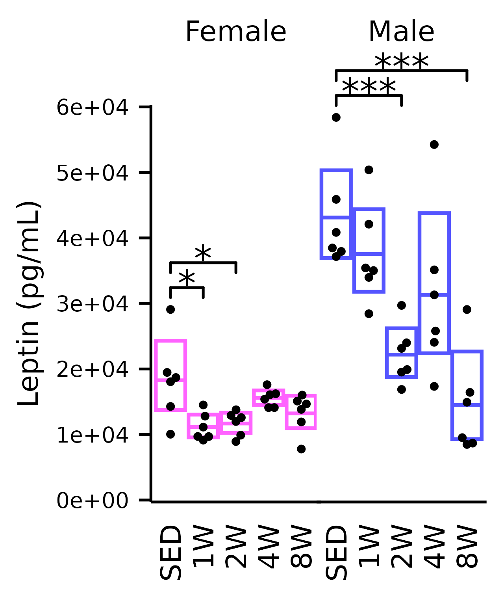
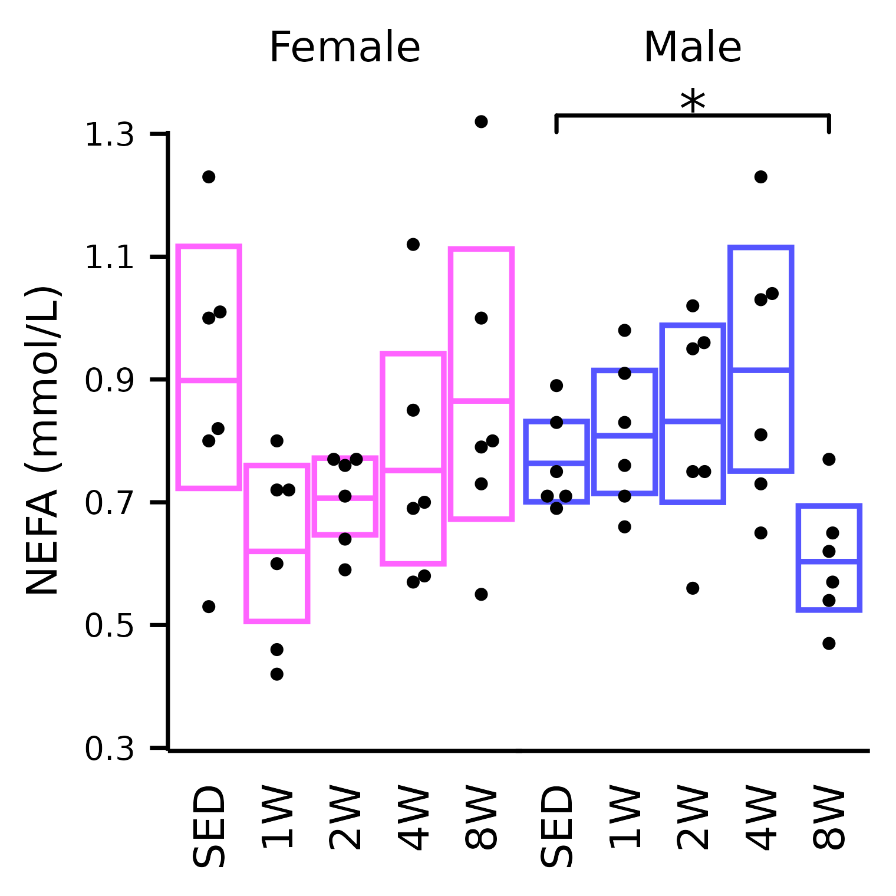

vignettes/articles/plot_analytes.Rmd
plot_analytes.RmdThis article generates plots of the plasma clinical analytes (Fig. 1F–I, Extended Data Fig. 1E, F).
# Required packages
library(MotrpacRatTraining6moWAT) # plot_baseline
library(MotrpacRatTraining6moWATData)
library(ggplot2)
library(dplyr)
library(purrr)
library(tidyr)
library(tibble)
library(emmeans)
library(scales)
save_plots <- dir.exists(paths = file.path("..", "..", "plots"))
x <- ANALYTES %>%
filter(omics_subset) %>%
dplyr::rename(group = timepoint)
stats_df <- ANALYTES_STATS$timewise
# Reformat confidence interval data
conf_df <- map(ANALYTES_EMM$timewise, function(emm_i) {
terms_i <- attr(terms(emm_i@model.info), which = "term.labels")
out <- summary(emm_i) %>%
as.data.frame() %>%
dplyr::rename(any_of(c(lower.CL = "asymp.LCL",
upper.CL = "asymp.UCL",
response_mean = "response",
response_mean = "rate")))
out <- out %>%
mutate(timepoint = factor(timepoint,
levels = c("SED", paste0(2 ^ (0:3), "W"))))
return(out)
}) %>%
enframe(name = "response") %>%
unnest(value) %>%
dplyr::rename(group = timepoint)
## Glucagon
plot_baseline(x, response = "glucagon",
conf = filter(conf_df, response == "Glucagon"),
stats = filter(stats_df, response == "Glucagon"),
bracket.nudge.y = 12) +
scale_y_continuous(name = "Glucagon (pM)",
breaks = seq(0, 160, 40),
expand = expansion(mult = 5e-3)) +
coord_cartesian(ylim = c(0, 160), clip = "off") +
theme(plot.margin = margin(t = 4, r = 4, b = 4, l = 4),
strip.text = element_text(margin = margin(b = 14)))
## Glucose
plot_baseline(x, response = "glucose",
conf = filter(conf_df, response == "Glucose"),
stats = filter(stats_df, response == "Glucose"),
bracket.nudge.y = 6) +
scale_y_continuous(name = "Glucose (mg/dL)",
expand = expansion(mult = 5e-3)) +
coord_cartesian(ylim = c(115, 200), clip = "off") +
theme(plot.margin = margin(t = 4, r = 4, b = 4, l = 4),
strip.text = element_text(margin = margin(b = 4)))
## Glycerol
plot_baseline(x, response = "glycerol",
conf = filter(conf_df, response == "Glycerol"),
stats = filter(stats_df, response == "Glycerol"),
bracket.nudge.y = 0.2) +
scale_y_continuous(name = "Glycerol (mg/dL)",
expand = expansion(mult = 5e-3)) +
coord_cartesian(ylim = c(0, 3), clip = "off") +
theme(plot.margin = margin(t = 4, r = 4, b = 4, l = 4),
strip.text = element_text(margin = margin(b = 5)))
## Insulin
plot_baseline(x, response = "insulin_iu",
bracket.nudge.y = 10) +
scale_y_continuous(name = "Insulin (mg/dL)",
expand = expansion(mult = 5e-3),
breaks = seq(20, 140, 20),
sec.axis = sec_axis(name = "Insulin (pg/mL)",
trans = ~ .x / 0.023,
breaks = 1000 * 1:6)) +
coord_cartesian(ylim = c(20, 140), clip = "off") +
theme(plot.margin = margin(t = 4, r = 4, b = 4, l = 4),
strip.text = element_text(margin = margin(b = 5)))
## Leptin
plot_baseline(x, response = "leptin",
conf = filter(conf_df, response == "Leptin"),
stats = filter(stats_df, response == "Leptin"),
bracket.nudge.y = 1e4 / 3) +
scale_y_continuous(name = "Leptin (pg/mL)",
labels = scales::label_scientific(digits = 1),
expand = expansion(mult = 5e-3)) +
coord_cartesian(ylim = c(0, 6e4), clip = "off") +
theme(plot.margin = margin(t = 4, r = 4, b = 4, l = 4),
strip.text = element_text(margin = margin(b = 14)))
## NEFA
plot_baseline(x, response = "nefa",
conf = filter(conf_df, response == "NEFA"),
stats = filter(stats_df, response == "NEFA"),
bracket.nudge.y = 0.1) +
scale_y_continuous(name = "NEFA (mmol/L)",
breaks = seq(0.3, 1.3, 0.2),
expand = expansion(mult = 5e-3)) +
coord_cartesian(ylim = c(0.3, 1.3), clip = "off") +
theme(plot.margin = margin(t = 4, r = 4, b = 4, l = 4),
strip.text = element_text(margin = margin(b = 10)))
sessionInfo()
#> R version 4.3.3 (2024-02-29)
#> Platform: x86_64-pc-linux-gnu (64-bit)
#> Running under: Ubuntu 22.04.4 LTS
#>
#> Matrix products: default
#> BLAS: /usr/lib/x86_64-linux-gnu/openblas-pthread/libblas.so.3
#> LAPACK: /usr/lib/x86_64-linux-gnu/openblas-pthread/libopenblasp-r0.3.20.so; LAPACK version 3.10.0
#>
#> locale:
#> [1] LC_CTYPE=C.UTF-8 LC_NUMERIC=C LC_TIME=C.UTF-8
#> [4] LC_COLLATE=C.UTF-8 LC_MONETARY=C.UTF-8 LC_MESSAGES=C.UTF-8
#> [7] LC_PAPER=C.UTF-8 LC_NAME=C LC_ADDRESS=C
#> [10] LC_TELEPHONE=C LC_MEASUREMENT=C.UTF-8 LC_IDENTIFICATION=C
#>
#> time zone: UTC
#> tzcode source: system (glibc)
#>
#> attached base packages:
#> [1] stats graphics grDevices utils datasets methods base
#>
#> other attached packages:
#> [1] scales_1.3.0 emmeans_1.10.0
#> [3] tibble_3.2.1 tidyr_1.3.1
#> [5] purrr_1.0.2 dplyr_1.1.4
#> [7] ggplot2_3.5.0 MotrpacRatTraining6moWATData_2.0.0
#> [9] MotrpacRatTraining6moWAT_1.0.0 Biobase_2.62.0
#> [11] BiocGenerics_0.48.1
#>
#> loaded via a namespace (and not attached):
#> [1] RColorBrewer_1.1-3 rstudioapi_0.15.0 jsonlite_1.8.8
#> [4] shape_1.4.6.1 magrittr_2.0.3 estimability_1.5
#> [7] ggbeeswarm_0.7.2 farver_2.1.1 rmarkdown_2.25
#> [10] GlobalOptions_0.1.2 fs_1.6.3 zlibbioc_1.48.0
#> [13] ragg_1.2.7 vctrs_0.6.5 memoise_2.0.1
#> [16] RCurl_1.98-1.14 base64enc_0.1-3 rstatix_0.7.2
#> [19] htmltools_0.5.7 dynamicTreeCut_1.63-1 curl_5.2.1
#> [22] broom_1.0.5 Formula_1.2-5 sass_0.4.8
#> [25] bslib_0.6.1 htmlwidgets_1.6.4 desc_1.4.3
#> [28] impute_1.76.0 cachem_1.0.8 lifecycle_1.0.4
#> [31] iterators_1.0.14 pkgconfig_2.0.3 Matrix_1.6-5
#> [34] R6_2.5.1 fastmap_1.1.1 GenomeInfoDbData_1.2.11
#> [37] clue_0.3-65 digest_0.6.34 colorspace_2.1-0
#> [40] patchwork_1.2.0 AnnotationDbi_1.64.1 S4Vectors_0.40.2
#> [43] textshaping_0.3.7 Hmisc_5.1-1 RSQLite_2.3.5
#> [46] ggpubr_0.6.0 labeling_0.4.3 filelock_1.0.3
#> [49] latex2exp_0.9.6 fansi_1.0.6 httr_1.4.7
#> [52] abind_1.4-5 compiler_4.3.3 withr_3.0.0
#> [55] bit64_4.0.5 doParallel_1.0.17 htmlTable_2.4.2
#> [58] backports_1.4.1 BiocParallel_1.36.0 carData_3.0-5
#> [61] DBI_1.2.2 highr_0.10 ggsignif_0.6.4
#> [64] rjson_0.2.21 tools_4.3.3 vipor_0.4.7
#> [67] foreign_0.8-86 beeswarm_0.4.0 msigdbr_7.5.1
#> [70] nnet_7.3-19 glue_1.7.0 grid_4.3.3
#> [73] checkmate_2.3.1 cluster_2.1.6 fgsea_1.28.0
#> [76] generics_0.1.3 gtable_0.3.4 preprocessCore_1.64.0
#> [79] data.table_1.15.2 WGCNA_1.72-5 car_3.1-2
#> [82] utf8_1.2.4 XVector_0.42.0 foreach_1.5.2
#> [85] pillar_1.9.0 stringr_1.5.1 babelgene_22.9
#> [88] limma_3.58.1 circlize_0.4.16 splines_4.3.3
#> [91] BiocFileCache_2.10.1 lattice_0.22-5 survival_3.5-8
#> [94] bit_4.0.5 tidyselect_1.2.0 GO.db_3.18.0
#> [97] ComplexHeatmap_2.18.0 locfit_1.5-9.9 Biostrings_2.70.2
#> [100] knitr_1.45 gridExtra_2.3 IRanges_2.36.0
#> [103] edgeR_4.0.16 stats4_4.3.3 xfun_0.42
#> [106] statmod_1.5.0 matrixStats_1.2.0 stringi_1.8.3
#> [109] yaml_2.3.8 evaluate_0.23 codetools_0.2-19
#> [112] cli_3.6.2 ontologyIndex_2.12 rpart_4.1.23
#> [115] systemfonts_1.0.5 munsell_0.5.0 jquerylib_0.1.4
#> [118] Rcpp_1.0.12 GenomeInfoDb_1.38.6 dbplyr_2.4.0
#> [121] png_0.1-8 fastcluster_1.2.6 parallel_4.3.3
#> [124] pkgdown_2.0.7 blob_1.2.4 bitops_1.0-7
#> [127] mvtnorm_1.2-4 crayon_1.5.2 GetoptLong_1.0.5
#> [130] rlang_1.1.3 cowplot_1.1.3 fastmatch_1.1-4
#> [133] KEGGREST_1.42.0